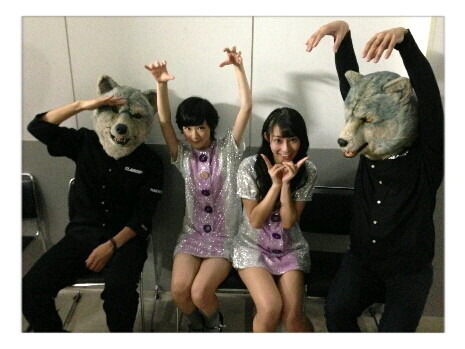

| 2012/10 27 Sat | 思い出話ヽ( ・∀・)ノ |
いろいろわちゃわちゃ〜して
げほげほっぐふっげはぁっ

と風邪をこじらせまくり、寝まくっていたら、ブログを書かない日々が続きました。
のでここで少し語らせていただきヤス。
まずはコ・フェスタからっ！
国際的なイベントに参加させて頂きました。
こういったチャンスを生かして、乃木坂がもっと上にのぼって行けるようにと思いました。
偉い人の前だったにも関わらず、鼻がつまって声がガチで出なくて焦りました。
でも狼さん達と仲良くなりました。

触らせてくれましたっ!!
フサフサでした

カルガモを食べるんだってMAN WITH A MISSIONさんありがとうございました！

そして昨日はGirl POP LIVEに参加させて頂きました！
Dancing Dollsさん スマイレージさん 東京女子流さん 乃木坂46 9nineさん
が参加しましたぞぇ。
いや〜
アイドルはいいね〜
ついなんでそんなかわいいんだー

と叫びました。
あと乃木坂ライブスキルあげないとな〜
沢山やって、学んでもっと盛り上って楽しいライブをしたいな。
頑張るぞ!!
来てくださったみなさんありがとうございました！
アメイジングを会場の全員でやったのはすごく感動したっ!!
かずみさんのアメイジングは素晴らしいねっ

じゃねっ!!
へばなっ!!
コメント(267)
2012/10/27 23:06